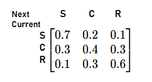

Day 4. If you’ve made it this far, you’re already ahead of most people who give up when things get “too technical.” But not you. You’re here, stacking up knowledge, one concept at a time.
By now, stats might be starting to feel less like random numbers and more like the secret language of AI. That’s because it is. Every formula, every concept—it’s all leading up to the moment when you start coding and actually see everything come to life.
So keep going. You’re building the kind of foundation that most people skip—and that’s exactly why you’ll be the one who really understands how AI works. Let’s get to it.
Understanding the Chain Rule of Probability: Breaking Down Complex
Events
In its essence, the chain rule expresses the joint probability of a sequence of events as the
product of conditional probabilities. Mathematically, for events A, B, and C, we write this as:
P(A ∩ B ∩ C) = P(A) x P(B|A) x P(C|A,B)
A more generalized version would be, for any random variables X1,X2,…,XnX1,X2,…,Xn, the chain rule
states:
P(X1,X2,…,Xn)=P(X1) x P(X2|X1) x P(X3|X1,X2) x …
xP(Xn|X1,X2,…,Xn—1)
In plain English, this means: the probability of all these events happening together can be built
step-by-step by multiplying the probability of the first event with the conditional probabilities of
each subsequent event given the earlier
ones.
And it's pretty intuitive if you think about it. Let's consider a simple scenario: You're getting
ready for work in the morning, and you need three things to go right:
1. Your alarm needs to work (Event A)
2. Your car needs to start (Event B)
3. Traffic needs to be light (Event C)
To calculate the probability of having a perfect morning commute:
- Let's say you wake up on time with your alarm 95% of the time: P(A) = 0.95
- Given that you wake up on time, your car starts 90% of the time: P(B|A) = 0.90
- Given both previous events, traffic is light 70% of the time: P(C|A,B) = 0.70
Using the chain rule:
P(perfect commute) = 0.95 x 0.90 x 0.70 = 0.5985 or about 60%
But what if the events are independent of
each other?
Then it's even easier.
If two events A and B are independent, the occurrence of one does not affect the probability of the
other. In this case:
P(A|B)=P(A)
and
P(B|A)=P(B)
So, in the chain rule, if the events are independent, you don't need the conditional part. The
formula simplifies to:
P(A,B)=P(A)xP(B)
and
P(B,A)=P(B)xP(A)
Markov
Chains: A Practical Guide to State Transitions and Probability
A Markov chain is a mathematical system that describes a sequence of possible events where the
probability of each event depends only on the state in the previous event, not on the events that
happened before it. This
memoryless property, known as the Markov property, is what makes Markov chains both
powerful and practical.
The defining characteristic of a Markov chain is that future predictions are based solely on the
present state, not on the sequence of events that preceded it. Mathematically:
P(Xn+1 = x | X1 = x1, X2 = x2, ..., Xn = xn) = P(Xn+1 = x | Xn = xn)
Take some time to digest this.
Instead of this complex calculation, we just need to check the previous state. That's it.
Let's say we want to model the weather with the states:
- Sunny (S)
- Cloudy (C)
- Rainy (R)
We're given the information that,
- If it's Sunny today, there's a 70% chance it will be Sunny tomorrow, a 20% chance it will be Cloudy, and a 10% chance it will be Rainy.
- If it's Cloudy today, there's a 30% chance it will be Sunny tomorrow, a 40% chance it will be Cloudy, and a 30% chance it will be Rainy.
- If it's Rainy today, there's a 10% chance it will be Sunny tomorrow, a 30% chance it will be Cloudy,
and a 60% chance it will be Rainy.
This can be represented in a matrix, which we give the fancy name of transition matrix, where
each row corresponds to the current state and each column corresponds to the next
state.
It's pretty easy to understand.

Each value in the table represents the probability of moving from one state to another. The rows
portion is the current weather, and the columns(top) one is the predicted weather. For example, from
Sunny to Cloudy has a probability of
0.2.
This matrix gave us a nice view of all the possibilities. See, how we didn't dependent on any other value
for our prediction other than the previous one? That's the power of Markov chains.
CONGRATULATIONS!!!
You have just completed Day 4. Now do re-read the whole thing again. Until you can understand every concept. Take a pen and paper; and make notes. Revise. And remember, nothing is tough. You just need to have the hunger for knowledge.